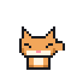
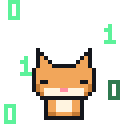

Месяц 1 · Урок 2 · Центр Памятьвиля
Язык компьютера: биты и байты
Почему компьютер понимает только 0 и 1, как ими считать и как из них получаются буквы и гигабайты.
Мем недели
Не смешно? К концу урока будет.

Почему только 0 и 1
Внутри процессора нет цифр, букв и картинок. Там есть миллиарды крошечных выключателей, которые называются транзисторы. Каждый из них умеет только две вещи: пропускать ток или не пропускать.
Договорились так: ток есть, значит 1, тока нет, значит 0. Один такой выключатель хранит одну «да или нет». Это и есть бит, самая маленькая порция информации.
Попробуй: один бит
Нажми на выключатель. Сколько разных сообщений можно передать одним битом?
Ответ: два. «Да» или «нет», «свет горит» или «не горит».
Одного бита мало. Но если поставить выключатели в ряд, вариантов становится больше. Два бита дают 4 комбинации: 00, 01, 10, 11. Три бита дают 8. Каждый новый бит удваивает число вариантов.
Попробуй: три бита
Найди все 8 комбинаций. Справа видно, какое число они означают.
= 0
Глубже: почему не 10 уровней тока, как 10 цифр?
Можно было бы делить напряжение на 10 ступенек, по одной на каждую цифру. Но провода в компьютере шумят: напряжение всё время немного прыгает из-за тепла и соседних проводов. Отличить «есть ток» от «нет тока» легко даже при шуме, а отличить ступеньку 6 от ступеньки 7 намного сложнее. Поэтому два состояния надёжнее, и все современные компьютеры двоичные.
Как считать в двоичном коде
В обычных числах каждая позиция «весит» в 10 раз больше соседней: единицы, десятки, сотни. В двоичном коде каждая позиция весит в 2 раза больше. Справа налево: 1, 2, 4, 8, 16, 32, 64, 128.
Чтобы узнать число, складываем веса там, где стоит 1. Например, 1101 это 8 + 4 + 1 = 13.
Обратно тоже просто. Чтобы записать 13, берём самый большой вес, который влезает (8), остаётся 5. Влезает 4, остаётся 1. Влезает 1, остаётся 0. Включаем биты 8, 4 и 1: получается 1101.
Пульт байта
Восемь битов вместе. Включай и выключай их и смотри, как меняется число.
= 0 · HEX 00

Глубже: перевод делением на 2
Есть второй способ перевести число в двоичный код. Делим число на 2 и записываем остаток, пока не получится 0. Потом читаем остатки снизу вверх.
13 : 2 = 6, остаток 1
6 : 2 = 3, остаток 0
3 : 2 = 1, остаток 1
1 : 2 = 0, остаток 1
Снизу вверх: 1101
Так работают и программы, которые переводят числа внутри компьютера.
Байты, буквы и гигабайты
Восемь битов вместе называются байт. Байтом можно записать 256 разных чисел: от 0 (00000000) до 255 (11111111).
Буквы компьютер тоже хранит числами. Есть таблица, где у каждой буквы свой номер. Например, латинская A это 65, то есть 01000001. Когда ты печатаешь сообщение, на самом деле отправляются числа.
Единицы измерения
8 бит = 1 байт
1024 байта = 1 килобайт (КБ)
1024 КБ = 1 мегабайт (МБ)
1024 МБ = 1 гигабайт (ГБ)
1024 ГБ = 1 терабайт (ТБ)
Почему 1024, а не 1000? Потому что 1024 это 2 в десятой степени, круглое число для компьютера.
Глубже: почему флешка на 64 ГБ показывает 59
Производители считают гигабайт как 1 000 000 000 байт, а Windows как 1024 × 1024 × 1024 = 1 073 741 824 байта. Получается, что «64 ГБ» производителя это 64 000 000 000 : 1 073 741 824 ≈ 59,6 ГБ по счёту Windows. Никто не обманул, просто считают по-разному.
Шестнадцатеричный код (HEX)
Длинные ряды нулей и единиц читать неудобно. Поэтому программисты делят байт на две половинки по 4 бита и каждую записывают одним знаком. Четыре бита дают 16 вариантов, и цифр не хватает, поэтому после 9 идут буквы: A = 10, B = 11, C = 12, D = 13, E = 14, F = 15.
Например, 1111 0000 это F0, а 0010 1010 это 2A. Посмотри на «Пульт байта» выше: там тоже есть HEX.
#FF0000 это красный.
Повтори и сделай ДЗ
Коротко
- Бит хранит 0 или 1, как выключатель.
- Каждый новый бит удваивает число вариантов.
- Веса битов справа налево: 1, 2, 4, 8, 16, 32, 64, 128.
- 8 бит = 1 байт = 256 вариантов.
- HEX записывает каждые 4 бита одним знаком от 0 до F.
Сыграй ещё раз в игры выше: задания каждый раз новые. Потом заполни домашнее задание. Делай его сам, без подсказок: так ты заработаешь XP честно.